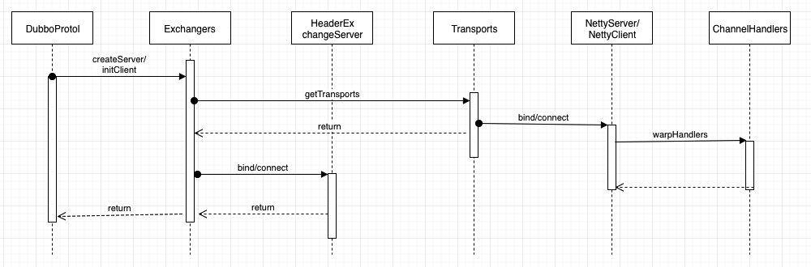
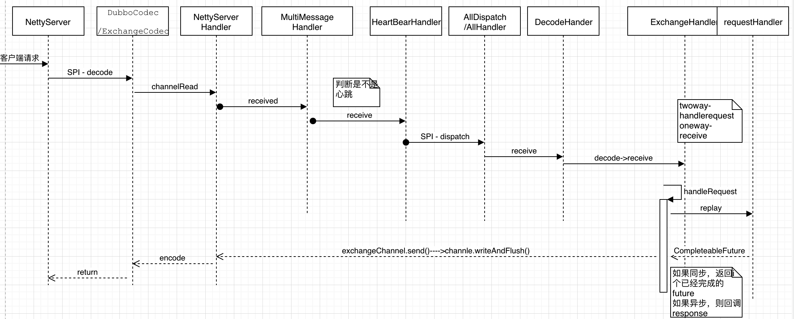
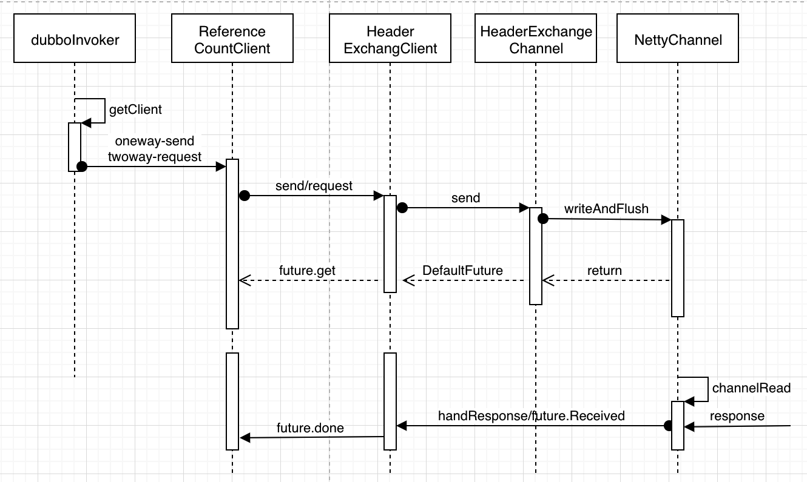

Dubbo remoting 源码阅读笔记

Contents
Dubbo设计思路很好，一直想阅读源码来着，而且dubbo的模块划分也很清晰，职责明确，这次准备从一些常用的模块逐个分析这个模块的职责和设计，然后再从整体入手，看看整个框架的整体设计，首先选择的是remoting模块，了解一下作为一个RPC框架网络部分的设计思路：
先上图吧，网络部分初始化和server/client流程：
初始化

server

client

Remoting API设计
API定义了远程通讯的领域对象，其实spring cloud的做法也是类似，定义远程通信行为，而隐藏实现，以便可以方便的切换实现，我们来看下RPC框架的remoting应该一些常见角色：
api 首先定义远程通讯的通用模型
- Endpoint 所有的remoting都是一个端点，每个端点都包含URL,handler,发送
- Server 远程服务端,拥有所有的连接、
- Client 远程客户端
- Channel 一条传输通道
- ChannelHandler 通讯处理类，包含 收、发、连接、断链等通用操作，典型装饰者模式，支持增强handler的能力
- Dispatch 事件派发器，处理事件的入口，由Dispatch调用handler处理event
- Buffer IO
- Codec 编码解码
- Transport 传输层的定义，通过SPI获取对应的transport,然后通过transport绑定server，或者发起连接Client
- Transports 定义了Transport的facade方法，如果传入多个handlers，使用ChannelHandlerDispatch
transport 定义网络传输基础模型的抽象业务逻辑
- AbstractPeer 抽象的peer，具备一般收发、关闭的能力
- AbstractEndpoint 增加了 codec
- AbstractServer 指定了InetSocketAddress ,以及指定了ExecutorService,定义了IdleTimeout、最大连接数，open , disconnect服务
- AbstractClient 含定时重连服务、ExecutorService，url指定线程名称，连接时启动检查的定时任务，在连接关闭时，销毁连接检查服务,连接、关闭等服务
- AbstractCodec payload检查，序列化类的注入
- ChannelHandlerDispatch Dispatch调用对应的Handler,handler链式调用，支持新增或者删除handler，使用CopyOnWriterList实现
- ChannelHandlers 链式包含 批量消息处理、心跳消息处理、之后才是业务消息Dispatch，使用默认的Dispatch派发事件和Handler
- DecodeHandler 编码解码处理器，会作为最顶层处理器注入到server
- Dispatch 服务端事件派发模型 All 全部线程池处理 Direct IO线程处理 Message请求响应都是线程池，其他IO线程处理 Execute 请求线程池处理 Dispatch的线程池对应Reactor中的业务线程
- ChannelEventRunner Event异步task
exchange 在传统的网络通讯的基础上，定义信息交换的方式，采用了消息交换模式描述整套远程信息交互方式，具有以下角色：
ExchangeServer 服务端绑定URL，以及对应的处理类
ExchangeClient 请求方，请求URL，以及返回信息的处理类
ExchangeHandler 处理交互的消息，真正的请求回复处理,由对应的协议实现处理逻辑(如Dubbo,Thrift)，根据请求对象返回异步的CompletableFuture
Request，Response对象，参考Request–response模式，定义了请求模型，支持多种请求类型two way,event,broker,heartbeat等
ExchangeChannel 定义了通讯的模型，channel有对应的handler,继承了Channel，从定义可以看出，ExchangeChannel定义的是交换的异步模型，新增了request,response方法，每个请求或者回复，返回都是RequestFuture / ResponseFuture
DefaultFuture 默认的ResponseFuture,存放当前的channel和future，通过requestID为key获取，每个request对应一个DefaultFuture,get等待在condition，received会signal对应的condition
使用时间轮来处理定时器任务，比如超时任务、心跳定时器、重连定时器等，摒弃了默认的timertask
Exchanger 获取关联的ExchangeServer和ExchangeClient ,默认Exchanger为 HeaderExchanger,代理Transport的Server和Client,HeaderExchangerServer和Client 都首先代理给DecodeHandler，由DecodeHandler完成Decode工作，然后由HeaderExchangeHandler处理,请求解码可在 IO 线程上执行，也可在线程池中执行，这个取决于运行时配置。DecodeHandler 存在的意义就是保证请求或响应对象可在线程池中被解码,其中server和client也封装了心跳逻辑，和通信部分解藕，关注点分离
HeaderExchangeHandler connect 交付 handler connect sent exchangechannel加入channel属性 receive handler
### Netty4
1
|
以默认netty4实现为例，其他的如mina或者grizzly略过，如果有需要自行查看。 |
- NettyTransport 默认的Transport，bind NettyServer or NettyClient
- NettyClient 默认的IO线程为当前机器的核数+1和32的小值,配置SO_KEEPLIVE TCP_NODELAY ，配置默认缓存分配器为pooled分配器，配置handler为nettyclientHandler并配置对应的编码解码器,netty指定的handler路线为 Multi — HeartBeat — Decode — Biz
- 请求报文调用NettyChannel的send ，最后调用channle的writerAndFlush
- 应答报文出现 触发channel的channelRead ，调用AbstractPeer的receive方法，指向HeaderExchanage的receive方法，获取对应的DefaultFuture
- NettyServer 配置默认IO线程, 传入decodhandler(exchangehandler(requesthandler)),封装Handler为MultiMessageHandler(HeartBeatHander(AllDispatch(exchange********)))
- NettyServerHandler 处理连接channelActive 获取nettychannel ，放入map | 接受请求 channelRead 调用handler.receive() ,如果是调用，然后调用requestHandler的 reply方法
Author zhouxwyeah
LastMod 2019-03-20